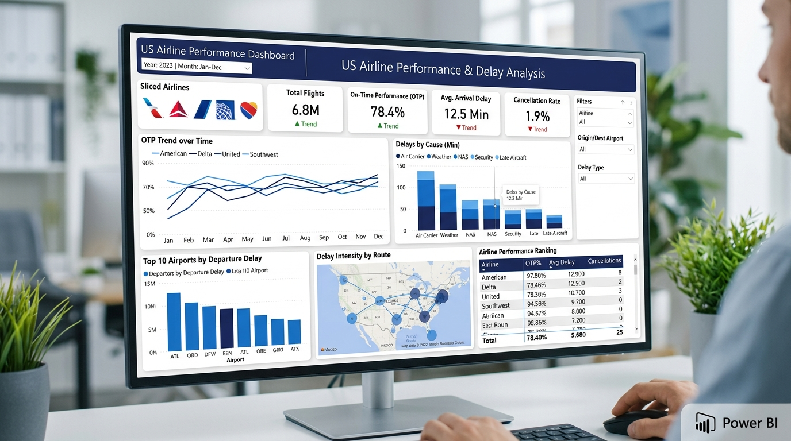
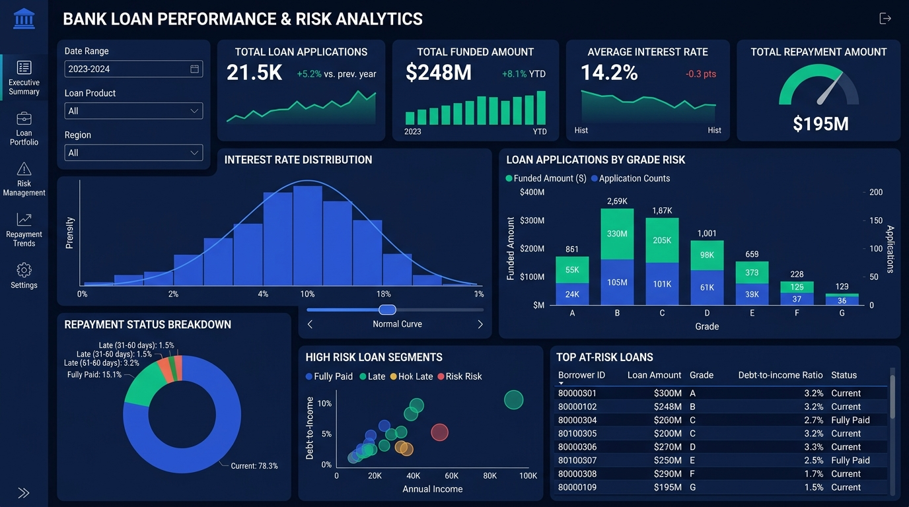

Analytics
Transforming raw data into actionable insights using SQL, Python, Power BI, Tableau and Excel.
A dedicated Commerce graduate who transitioned into data analytics, combining strong business acumen with technical analytics expertise.
I'm Chinna Obula Reddy, a B.Com graduate who moved into data analytics and completed an intensive 6-month Data Analyst internship at AI Variant. I enjoy cleaning messy datasets, finding hidden patterns, and presenting them as clear, intuitive dashboards that help decision-makers take swift, confident action.
To turn complex datasets into clear KPIs and insights that support better business decisions, bridging the gap between raw data pipelines and executive strategy through data storytelling.
Graduated with a Bachelor of Commerce (B.Com) from S.S.B.N Degree College with an outstanding 9.09 / 10 CGPA. This commerce background gives me a distinct advantage: a strong grasp of financial metrics, commercial operations, and quantitative reasoning paired with modern analytics tools.
B.Com Degree
9.09 / 10 CGPAExcelR Certified
6-Month ProgramAI Variant
6 Months Hands-OnEnd-to-End Analytics
2 Case StudiesMy academic path and specialized training that shaped my analytical mindset and technical foundation.
S.S.B.N Degree College
Comprehensive undergraduate studies covering financial accounting, commercial statistics, business analytics principles, and quantitative decision methods. Graduated with academic excellence (9.09 CGPA).
ExcelR Solutions
Rigorous hands-on curriculum focused on database querying, complex joins, data cleaning and validation, exploratory data analysis, business intelligence dashboard design, and capstone analytics projects.
Cisco Networking Academy
Foundational certification covering data lifecycle management, data preparation standards, statistical exploration, graphical storytelling, and essential data analytics concepts for industry applications.
Practical industry internship experience delivering data preparation, analytics pipelines, and executive dashboards.
Data Cleaning & Validation: Analyzed, cleaned, and prepared large transactional datasets using SQL, Excel, and Python (Pandas and NumPy), conducting validation and exploratory analysis to identify trends and eliminate inconsistencies.
Interactive BI Dashboards: Developed interactive dashboards and reports in Power BI, Tableau, and Excel to track core business KPIs, performance metrics, and deliver visual summaries for decision-making.
Data Modeling & Workflow Optimization: Built and maintained robust data models and table relationships, standardized reporting datasets across sources, and improved workflows to reduce manual data preparation effort.
Tools, technologies, and analytical methods I use to turn complex data into clear, actionable business intelligence.
Querying, joins, aggregations, subqueries, CTEs, and transactional data analysis.
Pandas, NumPy, automated data wrangling, data validation, and exploratory data analysis.
Interactive dashboards, KPI reporting, DAX measures, dynamic filtering & data modelling.
Visual analytics, calculated fields, multi-dimensional storyboards, and interactive charts.
Pivot Tables, Power Query, XLOOKUP, VLOOKUP, dynamic formulas, and summary models.
Data cleaning, exploratory analysis (EDA), data modeling, KPI structuring & metric definition.
Real-world data analytics projects showcasing my technical expertise and problem-solving approach across different domains.

Aviation AnalyticsAnalyzed U.S. airline data to uncover trends in flight delays, cancellations, and carrier operational performance. Performed extensive data cleaning, transformation and EDA in Python, executed SQL queries on key operational metrics, and engineered an interactive Power BI dashboard with KPIs and visual charts.

Financial AnalyticsAnalyzed commercial bank loan portfolios to identify patterns across loan amounts, borrower credit profiles, interest rates, and default risks. Cleaned data, handled missing values and outliers, and built multi-perspective dashboards in Excel, Power BI, and Tableau to isolate high-risk segments and repayment trends.
Industry-recognized professional certifications and specialized data programs.
ExcelR Solutions • 6 Month Comprehensive Program
In-depth practical curriculum covering SQL querying, Python for data manipulation (Pandas, NumPy), Advanced Excel functions, interactive dashboard construction in Power BI and Tableau, and real-world business case studies.
Cisco Networking Academy • Professional Credential
Industry training covering exploratory data analysis, data lifecycle pipelines, statistical distributions, data preparation frameworks, and visualization methodologies for data-driven strategic decisions.
Let's connect and discuss opportunities in data analytics, collaborate on exciting projects, or simply have a conversation about the fascinating world of data.
I'm actively seeking fresher Data Analyst roles, collaborations, and discussions on how to extract maximum value from datasets. Feel free to reach out directly through any of the channels below.